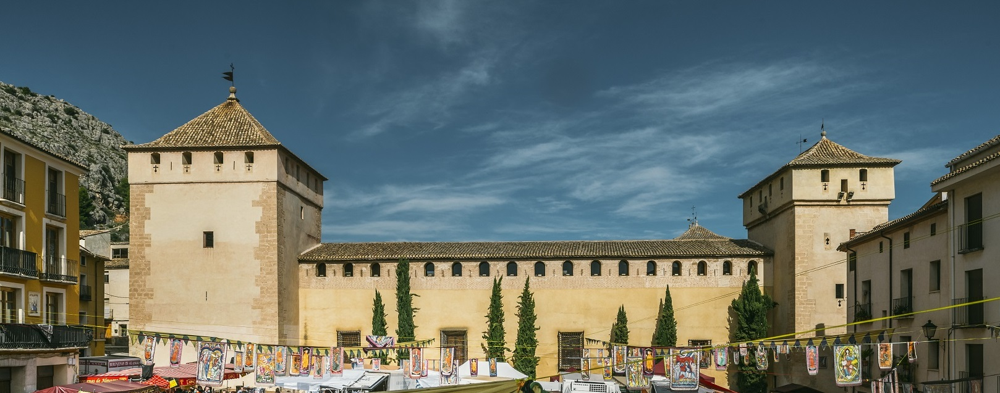
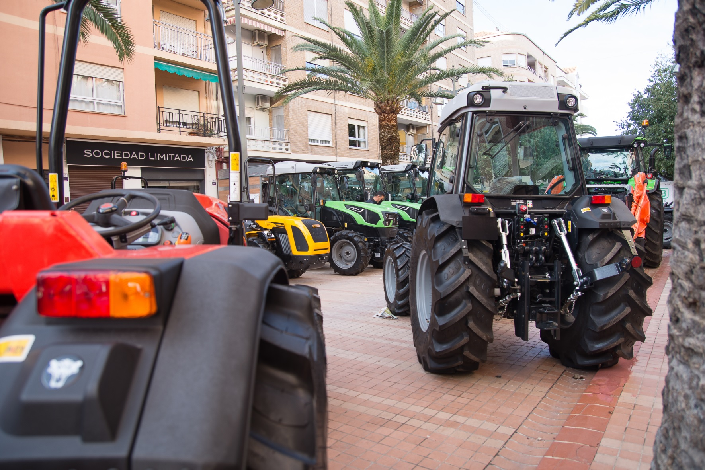

Patrimonio y territorio
La Fira de Tots Sants: tradición, agricultura y mercado vivo
La Fira Tots Sants Cocentaina 2026 reúne productos agrícolas, maquinaria, oficios tradicionales y mercado medieval en un encuentro que conecta pasado y futuro.

La Fira de Tots Sants de Cocentaina es uno de los acontecimientos más representativos del calendario festivo y comercial valenciano. Su propuesta combina tradición, comercio, gastronomía y divulgación cultural.
En la edición de 2026, las jornadas ponen el foco en la relación entre el mundo agrícola y los oficios tradicionales. La presencia de maquinaria, productos de proximidad y talleres permite mostrar cómo la innovación puede convivir con las prácticas heredadas.
Una feria no es solo un espacio de venta, sino un lugar donde una comunidad se reconoce, comparte conocimiento y proyecta su futuro.
El mercado medieval aporta una dimensión escénica y patrimonial. Las calles se convierten en un espacio de encuentro donde visitantes, productores, artesanos y entidades locales participan de una experiencia común.
- Exposición de maquinaria agrícola.
- Charlas sobre sostenibilidad y producto local.
- Talleres de oficios tradicionales.
- Actividades familiares en el mercado medieval.

Esta combinación de contenidos convierte la feria en una herramienta de dinamización económica, turística y cultural. Por este motivo, la web se plantea como un espacio informativo claro, visual y adaptable a cualquier dispositivo.